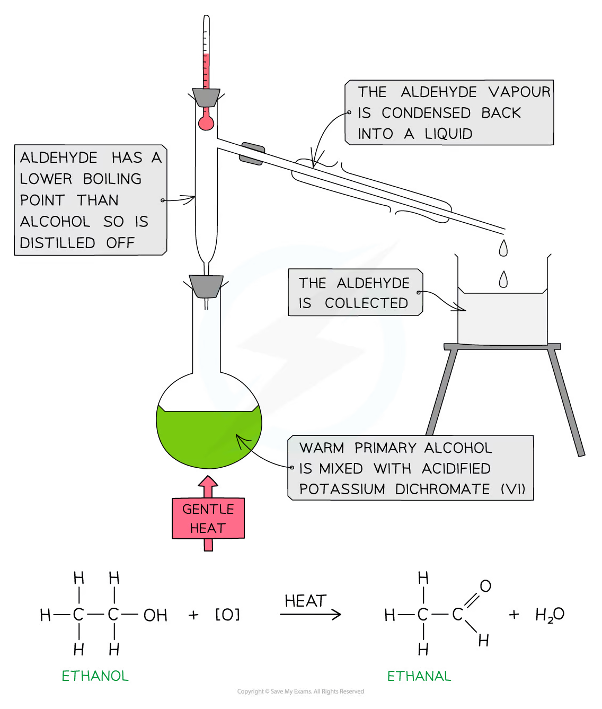
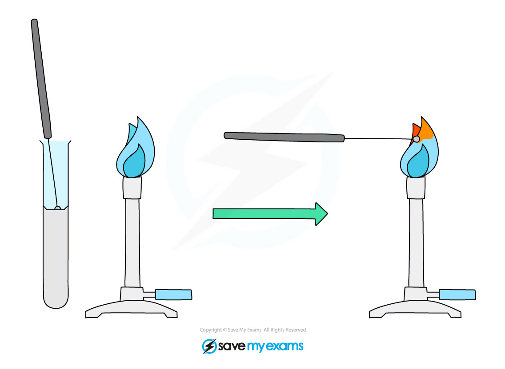

3.2 Inorganic - Organic Chemistry Core Practicals
Organic reactions, qualitative analysis and flame tests
3.2 Inorganic - Organic Chemistry Core Practicals
本页对应 3.2 Inorganic - Organic Chemistry Core Practicals.pdf.pdf，整理 Pearson Edexcel International Advanced Level Chemistry 的 inorganic / organic core practicals。专业词汇保留 English，重点覆盖 reaction conditions、observations、purification、qualitative tests、equations 和 safety。
Practical overview
| Core Practical | Investigation | Main skills |
|---|---|---|
| 5 | Hydrolysis of halogenoalkanes | Compare reaction rate and explain nucleophilic substitution |
| 6 | Chlorination of 2-methylpropan-2-ol | Organic preparation, separation and purification |
| 7 | Oxidation of propan-1-ol | Reflux, distillation and aldehyde collection |
| 8 | A-level qualitative analysis | Ion tests, flame tests and observations |
Learning objectives
学完本页后，你应该能够：
- explain why halogenoalkanes undergo hydrolysis and how the mechanism depends on structure；
- carry out an organic preparation using a separating funnel and wash the product safely；
- oxidise a primary alcohol under reflux and distil an aldehyde before further oxidation；
- identify ammonium、carbonate、sulfate ions and metal ions using confirmatory tests；
- use flame tests to identify selected metal ions and record observations precisely。
3.2.1 Hydrolysis of Halogenoalkanes
Core Practical 5
Hydrolysis of a halogenoalkane replaces the halogen atom with an -OH group：
\[ \ce{CH3CH2Br + OH- -> CH3CH2OH + Br-} \]
The hydroxide ion acts as a nucleophile. The carbon-halogen bond is polar，so the carbon is partially positive and is attacked by a lone pair on OH-。

Comparing reaction rates
A common comparison uses aqueous sodium hydroxide in ethanol and different halogenoalkanes. Warm the mixtures in a water bath，then add aqueous silver nitrate to test for halide ions released by hydrolysis。A precipitate indicates that halide ions have formed；a shorter time to precipitate indicates a faster hydrolysis。
- primary halogenoalkanes generally react more slowly than tertiary halogenoalkanes in conditions favouring ionisation；
- the carbon-halogen bond strength affects the rate；
- the halide leaving group also affects hydrolysis；
- keep the volume、concentration、temperature and halogenoalkane amount constant when comparing compounds。
Record reagent、temperature、time、precipitate colour and conclusion. Use a white background and consistent endpoint criterion when comparing cloudiness。
3.2.2 Chlorination of 2-Methylpropan-2-ol
Core Practical 6
The alcohol reacts with concentrated hydrochloric acid to form 2-chloro-2-methylpropane：
\[ \ce{(CH3)3COH + HCl -> (CH3)3CCl + H2O} \]
The product is an organic liquid that is immiscible with the aqueous layer. Use a separating funnel to separate the layers，release pressure frequently and identify the correct layer before draining。

Suggested method
- Mix the alcohol and concentrated hydrochloric acid carefully under the specified conditions。
- Transfer the mixture to a separating funnel and allow the layers to settle。
- Release pressure by inverting the funnel and opening the stopcock，then separate the layers。
- Wash the organic layer as instructed，dry it with a suitable drying agent and collect the product。
- Calculate percentage yield and compare the product properties with expected data。
Safety and evaluation
Concentrated hydrochloric acid is corrosive；the organic product is volatile and flammable。Use goggles、gloves、a fume cupboard and no naked flame。A low yield may result from incomplete reaction、loss during transfer、incorrect layer selection or product remaining dissolved in the aqueous phase。
3.2.3 Propan-1-ol Oxidation
Core Practical 7
Primary alcohol oxidation can stop at an aldehyde if the aldehyde is removed by distillation：
\[ \ce{CH3CH2CH2OH + [O] -> CH3CH2CHO + H2O} \]
Further oxidation gives propanoic acid：
\[ \ce{CH3CH2CHO + [O] -> CH3CH2COOH} \]
Use acidified potassium dichromate(VI) as oxidising agent. The orange dichromate solution changes to green Cr3+ solution during reduction。
Reflux and distillation
Heat under reflux to allow the reaction to proceed without losing volatile reactants. If the aldehyde is the target，distil it from the reaction mixture because it has a lower boiling point than the acid and can otherwise be oxidised further。


Evaluation
- add anti-bumping granules before heating；
- keep cooling water flowing through the condenser in the correct direction；
- do not seal a reflux apparatus；
- control the heating rate so the distillate is collected steadily；
- distil only the required fraction and avoid overheating the flask；
- use a fume cupboard because aldehydes、dichromate(VI) solutions and alcohols may be hazardous。
3.2.4 A-level Qualitative Analysis
Qualitative analysis identifies a substance by combining test method、condition、observation、ionic equation and conclusion. Never identify an ion from an observation alone when a confirmatory test is available。
Ammonium ions
Add aqueous sodium hydroxide and warm gently：
\[ \ce{NH4+ + OH- -> NH3 + H2O} \]
The ammonia turns damp red litmus paper blue. Do not directly smell the gas；use wafting only when instructed。

Carbonate ions
Add dilute acid. Effervescence indicates carbon dioxide：
\[ \ce{CO3^{2-} + 2H+ -> CO2 + H2O} \]
Bubble the gas through limewater；a milky precipitate confirms carbon dioxide：
\[ \ce{CO2 + Ca(OH)2 -> CaCO3(s) + H2O} \]

Sulfate ions
Acidify the sample with dilute hydrochloric acid and add barium chloride：
\[ \ce{Ba^{2+} + SO4^{2-} -> BaSO4(s)} \]
A white precipitate of barium sulfate indicates sulfate ions。

Flame tests
Clean a nichrome or platinum wire，dip it into the sample and place it in a non-luminous flame. Record the colour and compare with reference data：


Important observations include lithium scarlet red、sodium yellow、potassium lilac、rubidium red、caesium blue、calcium brick red、strontium red and barium apple green。Sodium contamination is common and can mask weaker colours。
Practical reporting
For each unknown，write a table with：
| Test | Reagent / condition | Observation | Inference |
|---|---|---|---|
| Ammonium | Warm with aqueous NaOH | Ammonia turns damp red litmus blue | NH4+ present |
| Carbonate | Add dilute acid, test gas with limewater | Effervescence; limewater milky | CO3^2- present |
| Sulfate | Acidify, add BaCl2 |
White precipitate | SO4^2- present |
| Flame test | Clean wire in non-luminous flame | Characteristic colour | Candidate metal ion |
Data, uncertainty and safety
Practical-answer structure
Write apparatus、method、control variables、observation、equation、conclusion and evaluation. Use exact colour descriptions such as “cream precipitate” or “apple-green flame”，not vague words such as “positive”。
Common errors and improvements
- contamination between unknowns: use clean droppers and separate test tubes；
- wrong layer in a separating funnel: allow layers to settle and test a small portion with water；
- further oxidation of aldehyde: distil the aldehyde promptly；
- gas escaping before confirmation: fit the delivery tube securely and test the apparatus first；
- flame colour masked by sodium: clean the wire thoroughly and use a cobalt-blue glass where appropriate。
Exam checklist
Source note
本页面对应：Note per Chapter/Note per Chapter/3.2 Inorganic - Organic Chemistry Core Practicals.pdf.pdf。页面中的 organic apparatus、qualitative-analysis diagrams 和 flame-test figures 均从该 PDF 的内嵌图像独立提取并保存到 assets/notes/inorganic-organic-core-practicals/。